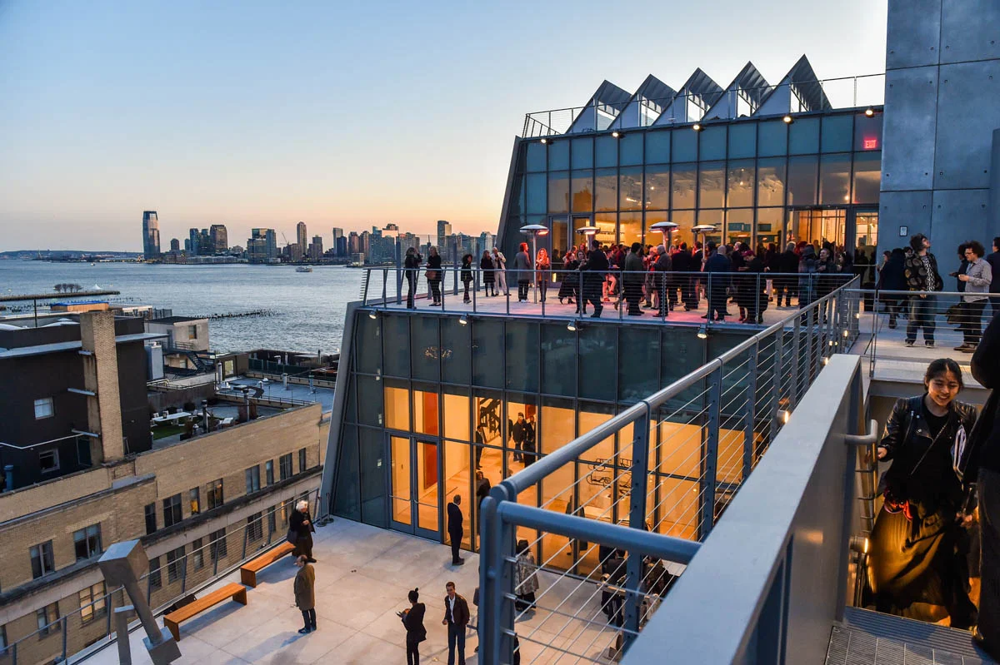

WHITNEY MUSEUM
L'HISTOIRE
Le musée a été fondé en 1930 par l'artiste et mécène Gertrude Vanderbilt Whitney. À une époque où l'art américain contemporain était souvent négligé, Whitney a eu la vision de créer un musée exclusivement dédié à l'art américain moderne. Elle a également joué un rôle crucial en soutenant financièrement de nombreux artistes émergents, offrant ainsi une plateforme vitale à de nombreux talents.
Au fil des ans, le musée a connu plusieurs changements de site, déménageant dans plusieurs endroits à New York avant de s'installer dans son emplacement actuel dans le Meatpacking District en 2015. La conception de ce nouveau bâtiment par l'architecte Renzo Piano a été saluée pour sa modernité et son ouverture, offrant des espaces lumineux et flexibles pour exposer les œuvres d'art contemporain.
Le Whitney Museum a continué d'élargir sa collection et d'organiser des expositions révolutionnaires qui mettent en valeur la diversité et la richesse de l'art américain. Il a joué un rôle essentiel dans la mise en lumière des artistes américains émergents tout en célébrant les figures établies de la scène artistique du pays.
INFUENCE DE PIANO
L'influence de Renzo Piano sur le Whitney Museum réside d'abord dans la conception de son nouvel emplacement dans le Meatpacking District. Il a conçu un bâtiment moderne et fonctionnel qui s'intègre harmonieusement dans le tissu urbain de la ville. La structure ouverte et lumineuse du musée, avec ses larges terrasses et ses espaces d'exposition flexibles, offre un cadre dynamique pour l'appréciation de l'art.
L'architecte a également eu une influence sur l'expérience visuelle et artistique des visiteurs du musée. Il a conçu des espaces où la lumière naturelle est abondante, offrant ainsi un cadre idéal pour apprécier les œuvres d'art. Les vastes fenêtres et les espaces ouverts permettent aux visiteurs de se connecter visuellement avec le quartier environnant tout en explorant les collections artistiques du musée.
Renzo Piano a également influencé la manière dont le Whitney Museum interagit avec son environnement culturel. Le nouveau bâtiment offre une plateforme pour des expositions dynamiques qui célèbrent l'art américain contemporain, renforçant ainsi le rôle du musée en tant que lieu de dialogue et d'interaction entre les artistes, les œuvres d'art et le public.
DÉCOUVRIR
Si l’article vous a plu, n’hésitez pas à lire celui sur le pont San Girorgio, une autre grande œuvre de Piano.